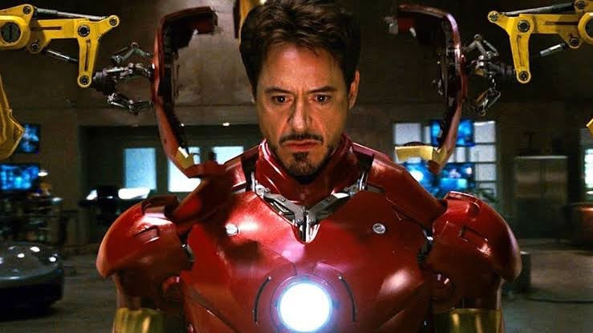
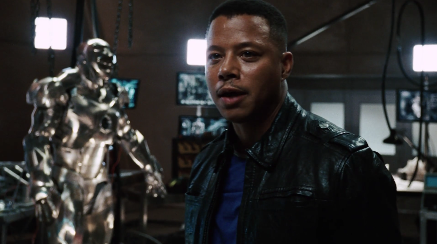
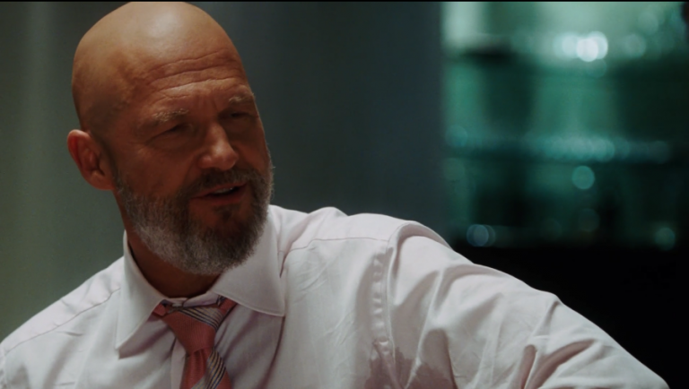

トニー・スターク / アイアンマン
天才発明家 / 慈善家 / CEO
スターク・インダストリーズのCEO。テロ組織に自社兵器が不正流用されている現実を知り、自ら開発した最高機密のパワードスーツを身にまとって戦うことを決意する。
「私がアイアンマンだ。」

ペッパー・ポッツ
トニーの有能な秘書
トニーの破天荒な行動に振り回されながらも、誰よりも彼を理解しサポートする女性。古いアーク・リアクターを「トニー・スタークに心臓があることの証明」として残した。
「トニー、あなたをお手伝いするのが私の仕事です。すべてにおいて。」

ジェームズ・“ローディ”・ローズ
アメリカ空軍中佐 / トニーの親友
軍とスターク社の橋渡し役であり、トニーの良き理解者。勝手気ままなトニーに激怒しつつも、窮地には必ず駆けつける。
「次の機会にな。」

オバディア・ステイン / アイアンモンガー
スターク・インダストリーズ副社長
ハワードの代から会社を支える重鎮だが、裏ではテロ組織に兵器を密売。トニーの技術を強奪し、巨大な「アイアンモンガー」を作り上げる。
「トニー・スタークはやってのけたぞ！洞窟の中でガラクタを使ってな！」